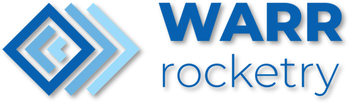
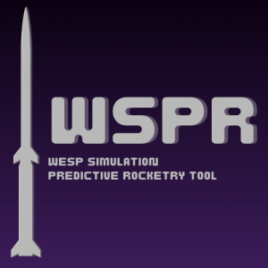
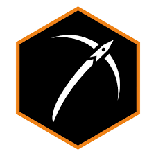

Experience
Student Researcher
DLR - German Aerospace Center
Jan 2024 - Present
Department of Perception and Cognition - DLR Institute for Robotics and Mechatronics
- Enhanced the Outdoor Artificial Intelligence Systems Simulator (OAISYS) to generate a synthetic asteroid image dataset outputting RGB-D, Mask and 6D Pose data, compatible with CNN models for detection, feature extraction and pose estimation.
- Developing machine learning models for analyzing generated synthetic asteroid image datasets.
- Researched and developed a CNN-based SLAM pipeline for autonomous asteroid navigation.
- Improved computational efficiency by 30% for onboard systems compared to traditional models.
- Replaced traditional image processing methods with a robust, noise-resistant approach for feature detection and tracking, enhancing 2D-3D matching.

Project WESP Co-Lead, WARR e.V.
Jan 2024 - Jul 2024
Co-led WESP's EX-1E project, marking the first staged rocket in WARR and European student rocketry history.
- Achieved a 7.8km launch at Spaceport America Cup 2024, securing 3rd place in the 30K COTS category and 16th overall out of 122.
- Managed a team of 40+ members, overseeing 25,000+ engineering hours and contributing 1,200+ personal hours.
- Directed the EX-1D launch in Germany, ensuring 100% compliance with safety regulations and protocols despite challenging weather.

Simulations Team Lead, WARR e.V.
May 2023 - Jul 2024
Established WSPR (WESP Simulation Predictive Rocketry Tool) in Python for 6 DOF simulations.
- Implemented wind impact analysis and Monte Carlo simulations, enhancing apogee and impact prediction accuracy by 135%.
- Created user-friendly GUIs for single- and multi-stage rocket simulations, leading to a 100% increase in user engagement.
- Produced a data logger for automated LaTeX report generation and analyzed telemetry data for future design optimizations.

Asteroid Mining Engineer Intern, Asteroid Mining Corporation Ltd
May 2022 - Sep 2022
Conducted techno-economic analysis and constructed financial models for an asteroid mining venture.
- Analyzed hydrogen energy use cases and ESG relevance, identifying future opportunities and trends by 2030.
- Formulated an award-winning 98-page internal scoping study, synthesizing market forecasts and strategic insights.
- Assessed viability and market demand for PGMs in the context of asteroid mining operations.